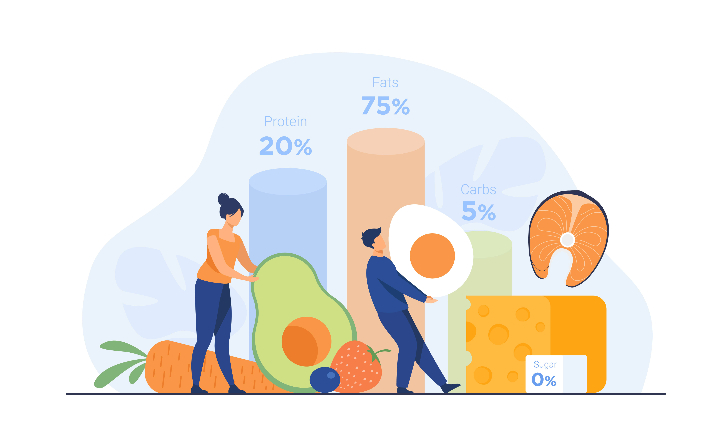

Porque acercarse a una nutricionista?
Te contamos el porque es necesario...
Un nutricionista puede ayudarte a diseñar un plan de alimentación saludable y adaptado a tus necesidades específicas, ya sea para perder peso, mejorar la salud general, o tratar una enfermedad relacionada con la nutrición. Además, los nutricionistas pueden proporcionarte educación nutricional para que puedas tomar decisiones informadas sobre lo que comes y cómo lo preparas. También pueden ayudarte a establecer metas realistas y a mantenerte motivado a medida que avanzas en tu camino hacia una mejor salud. Al trabajar con un nutricionista, puedes obtener asesoramiento personalizado y profesional, lo que puede resultar en una mejor salud a largo plazo y una mayor calidad de vida.
Hoy es un nuevo día y tenés la oportunidad de volver a empezar a cambiar hábitos y reconstruir tu alimentación. Esa alimentación que te ayuda a cambiar y mejorar tu vida y salud, esa que está diseñada de acuerdo a tus necesidades personales, según tus doshas en desequilibrio, esa que estás necesitando para lograrlo. Lo digo muchas veces, no existe dieta mágica ni perfecta, solo existen los verdaderos cambios de hábitos y que perduren en el tiempo, pero que los adaptes a tus gustos y requerimientos personales. Los alimentos reales, naturales, frescos te dan energía para vivir, trabajan sobre tu cuerpo brindándote lo que esa anatomía humana necesita, no lo olvides! Es una elección y siempre depende de vos.!